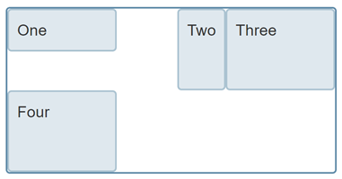
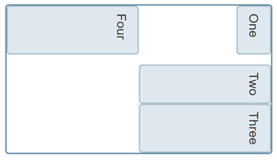
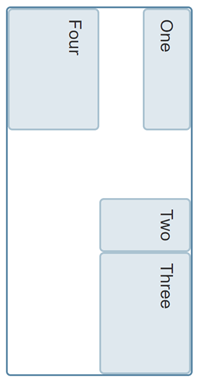

The Logical Properties and Values Specification introduces flow-relative mappings for many of the properties and values in CSS. This article introduces the specification, and explains flow relative properties and values.
CSS traditionally has sized things according to the physical dimensions of the screen. Therefore we describe boxes as having a {{CSSxRef("width")}} and {{CSSxRef("height")}}, position items from the top and left, float things left, assign borders, margin, and padding to the top, right, bottom, left, etc. The Logical Properties and Values specification defines mappings for these physical values to their logical, or flow relative, counterparts — e.g. start and end as opposed to left and right/top and bottom.
An example of why these mappings might be needed is as follows. I have a Layout using CSS Grid, the grid container has a width applied and I am using the {{CSSxRef("align-self")}} and {{CSSxRef("justify-self")}} properties to align the items. These properties are flow relative — justify-self: start aligns the item to the start on the inline dimension, align-self: start does the same on the block dimension.

If I now change the writing mode of this component to vertical-rl using the {{CSSxRef("writing-mode")}} property, the alignment continues to work in the same way. The inline dimension is now running vertically and the block dimension horizontally. The grid doesn't look the same however, as the width assigned to the container is a horizontal measure, a measure tied to the physical and not the logical or flow relative running of the text.

If instead of the width property we use the logical property {{CSSxRef("inline-size")}}, the component now works the same way no matter which writing mode it is displayed using.

You can try this out in the live example below. Change writing-mode from vertical-rl to horizontal-tb on .grid to see how the different properties change the layout.
{{EmbedGHLiveSample("css-examples/logical/intro-grid-example.html", '100%', 700)}}
When working with a site in a writing mode other than a horizontal, top to bottom one, or when using writing modes for creative reasons, being able to relate to the flow of the content makes a lot of sense.
A key concept of working with flow relative properties and values is the two dimensions of block and inline. As we saw above, newer CSS layout methods such as Flexbox and Grid Layout use the concepts of block and inline rather than right and left/top and bottom when aligning items.
The inline dimension is the dimension along which a line of text runs in the writing mode in use. Therefore, in an English document with the text running horizontally left to right, or an Arabic document with the text running horizontally right to left, the inline dimension is horizontal. Switch to a vertical writing mode (e.g. a Japanese document) and the inline dimension is now vertical, as lines in that writing mode run vertically.
The block dimension is the other dimension, and the direction in which blocks — such as paragraphs — display one after the other. In English and Arabic these run vertically, whereas in any vertical writing mode these run horizontally.
The below diagram shows the inline and block directions in a horizontal writing mode:
This diagram shows block and inline in a vertical writing mode:

Logical Properties and Values can be thought of as a couple of groups in terms of current browser support. Some of the properties are essentially mappings from the physical versions, for example {{CSSxRef("inline-size")}} for {{CSSxRef("width")}} or {{CSSxRef("margin-inline-start")}} rather than {{CSSxRef("margin-left")}}. These mapped properties are starting to see good browser support, and if you look at the individual pages for the properties in the reference here on MDN you will see that Edge is the only modern browser currently missing these.
There are then a group of properties which do not have a direct mapping in terms of existing physical properties. These are shorthands made possible by the fact that we can refer to both edges of the block or inline dimension at once. An example would be {{CSSxRef("margin-block")}}, which is a shorthand setting for {{CSSxRef("margin-block-start")}} and {{CSSxRef("margin-block-end")}}.
Note: The CSS Working Group are currently trying to decide what to do about the four-value shorthands for logical properties, for example the equivalents to setting four physical properties at once, like margins with the {{CSSxRef("margin")}} property. We would need some kind of modifier if we were to reuse margin for flow-relative properties. If you would like to read the suggestions or comment on them the relevant GitHub issue is #1282.
You can test for support of logical properties and values using feature queries. For example you could set a {{CSSxRef("width")}}, test for {{CSSxRef("inline-size")}} and, if it is supported, set the width to auto and the inline-size to the original width value.
{{EmbedGHLiveSample("css-examples/logical/intro-feature-queries.html", "100%", 700)}}